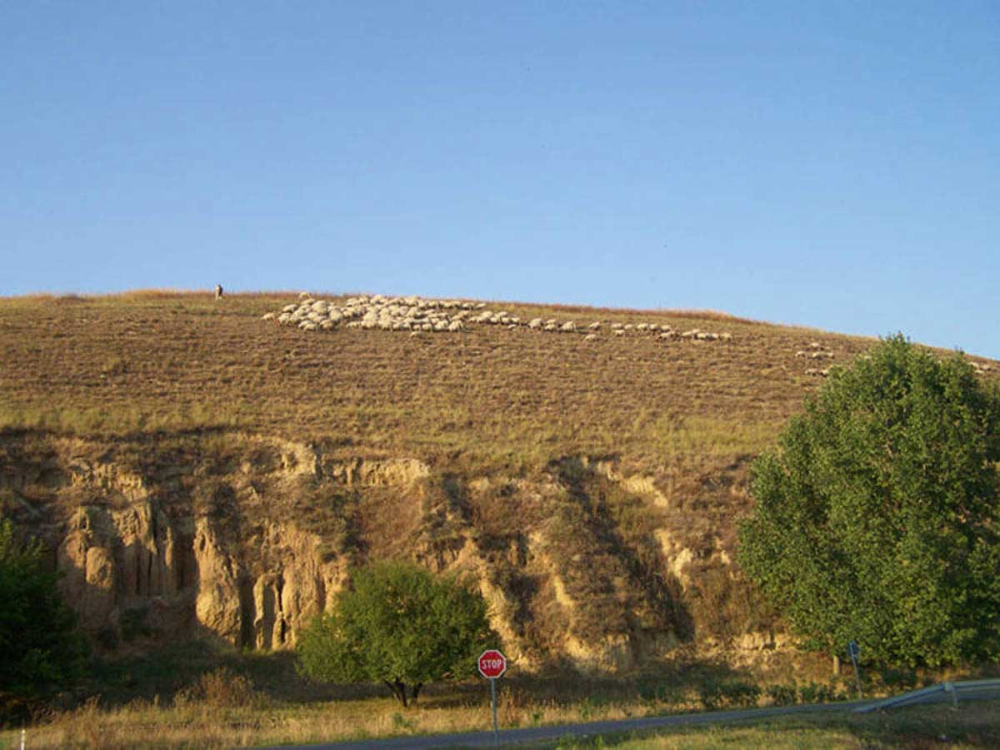

O Loku...
Lok je naselje u opštini Titel, Južnobački okrug, Republika Srbija. Većinsko stanovništvo po popisu iz 2002. godine čine Srbi potom Madjari i ostali. Stanovništvo se pretežno bavi poljoprivredom i stočarstvom. U selu postoje mesna zajednica, ambulanta, pošta,osnovna škola "Svetozar Miletić", dom kulture, verski objekti (Pravoslavna, Katolička i Adventistička crkva) kao i brojna udruženja (AKUD Djeram, lovačko društvo "Jarebica", ribolovačko društvo "Somče", ekološko društvo "Forland", fudbalski klub "Sloga Lok"...) Seoska slava je Sveti Ilija (2. Avgust). Više o Loku na sajtu wikipedia.
Centar sela
U "centru" sela se nalazi spomenik u obliku krsta koji istovremeno služi i kao okretnica autobusa. Iako ne predstavlja fizički centar sela, tako se naziva jer se u neposrednoj blizini nalaze škola, crkva, pošta, park, ambulanta...

Vodica
Izvor pijaće vode u neposrednoj blizini sela meštani (a i drugi) nazivaju vodica. Voda poseduje karakterističan miris "na pokvarena jaja" ali čak i uprkos tome njome se snabdevaju meštani Loka kao i brojni putnici sa svih strana Vojvodine a i šire...

Titelski breg
Lok je u toku vekova nekoliko puta menjao poziciju na, i u podnožju Titelskog brega. Trenutna lokacija sela je u podnožju, a na bregu su njive i ovce. Titelski breg je nacionalni rezervat prirode koji poseduje brojne vrste biljaka,ptica i drugih životinja. Takodje je i lepo mesto za paraglajding.
